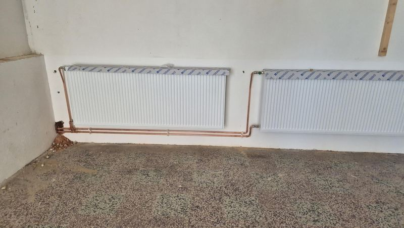
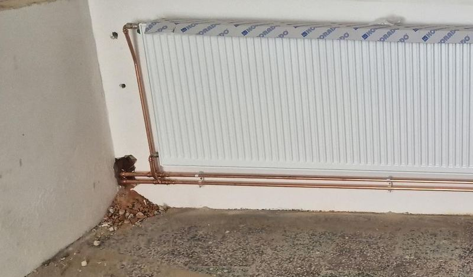

Kotle
Montáž kotlů na tuhá i plynná paliva a jejich napojení na topení.
Dominik Mader z Klokočova. Kompletní instalatérské a topenářské práce, rozvody vody, topení a plynu a montáž kotlů na tuhá i plynná paliva.

Klepněte na místnosti. Rozsvítí se rozvody, které do nich vedou, a vyberete je rovnou do poptávky.
Od jednoho kohoutku po rozvody celého domu.
Montáž kotlů na tuhá i plynná paliva a jejich napojení na topení.

Rozvody topení, radiátory a jejich výměna.

Rozvody vody a odpadů, koupelny, kuchyně a opravy.
„Odborně i řemeslně zdatný vodař, velmi seriózní jednání, rychlé provedení a slušná cena.“
zákazník na Firmy.cz
„Pan Dominik Mader co slíbil, to dodržel a cena za práci je velmi solidní.“
zákazník na Firmy.cz
„Kvalitně odvedená oprava a přijatelná cena.“
zákazník na Firmy.cz